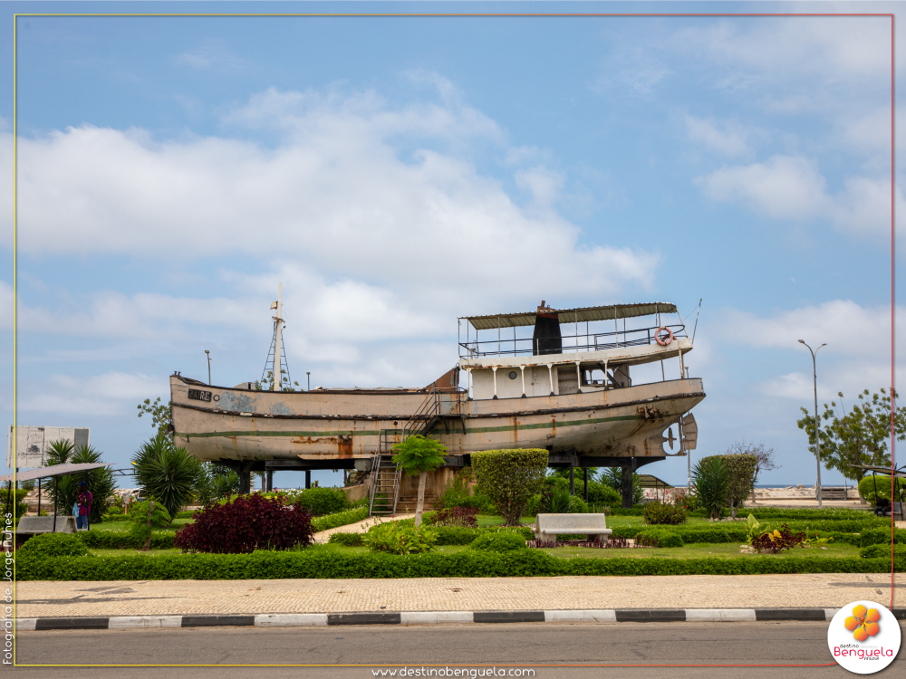

Monumento Histórico-cultural na Restinga do Lobito
Navio Zaire ou Navio Biblioteca Zaire é uma embarcação atualmente estática, está localizado no Bairro da
Restinga, zona privilegiada do Lobito, onde a baía junta-se ao mar alto, transformando-se numa atracão turística
muito procurada por estudantes, governantes, turistas e pessoas singulares, tanto nacionais como estrangeiras.
Atualmente está estático e serve de Biblioteca e monumento histórico, sendo assim um local de interesse turístico.
Sob responsabilidade do Museu de Etnografia da cidade ferro-portuária, o barco “Zaire” tem como mais alta referência o
transporte do ex-Presidente José Eduardo dos Santos, acompanhado de outros nacionalistas, no dia 07 de Novembro de 1961, com destino ao Congo Léopoldville (actual Congo Democrático), no âmbito da luta armada.
De acordo com arquivos do Museu, os sete passageiros que viajavam clandestinamente naquele barco através do rio Zaire,
o mesmo nome com o qual foi batizado, chegaram ao destino no dia 14 de Novembro, tendo passado coincidentemente sete dias a navegar.
História do barco
Dados bibliográficos indicam que o barco “Zaire” foi utilizado no transporte do ex-Presidente José Eduardo dos Santos e mais seis companheiros, sem mencioná-los, com destino ao Congo Léopoldville, actual Congo Democrático, para integrarem o Exército de Libertação de Angola (ELPA), antigo braço armado do Movimento Popular de Libertação de Angola (MPLA). Inaugurado no dia 15 de Novembro de 2000, o barco “Zaire” funcionou como biblioteca até meados de Março de 2017, com cinco funcionárias, entre bibliotecárias e guias para os visitantes. Daquela data até ao momento, encontra-se “semiabandonado” por falta de manutenção e outros cuidados merecidos por um símbolo nacional, que é património de todos os angolanos.
 Restinga, Lobito, Benguela, AO
Restinga, Lobito, Benguela, AO